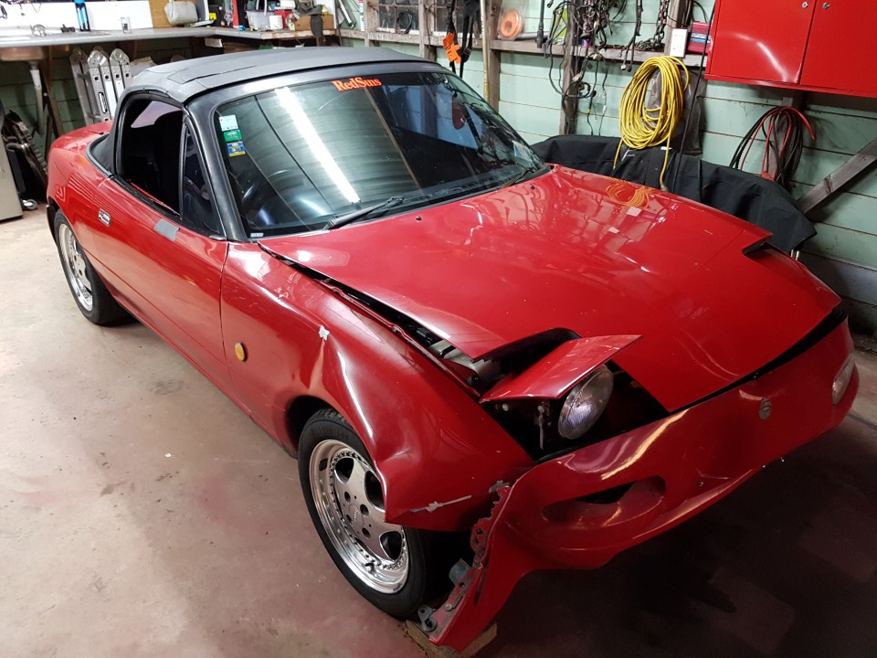
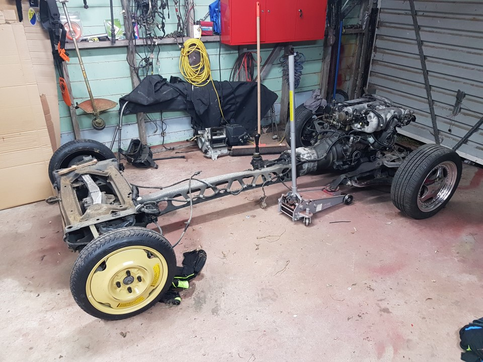
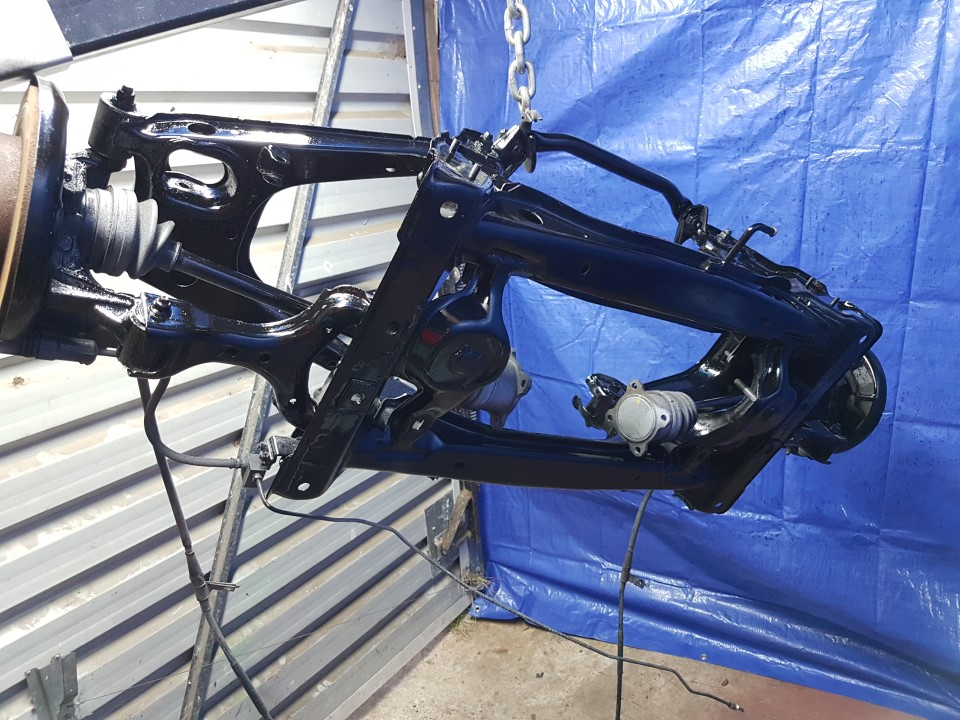

The simple task of removing everything from the MX5 donor vehicle. We provide little guidance here as its very much a case of undo every bolt. What we do tell you is what you need to ensure you keep safe and get off in one piece, of course you may wish to sell other parts on trademe etc to further offset your build cost.
Required parts
- Engine & gearbox
- Front subframe assembly
- Rear subframe assembly
- Ladder/backbone join to 2 subframes
- Wiring loom (all parts in the case of the NB that splits into 3 sections)
- dashboard dials and surround
- Steering column, ignition barrel and steering column controls (later modified to remove wipers control)
- Pedal boxes and associated reservoirs, bias devices etc.
- Handbrake & all cables, clips and brackets.
- Radiator, keep the mounting brackets too.
- Radiator hoses.
- Brake lines, clips, flex hoses.
- Fuel lines + EVAP filter.
- Throttle cable.
- Seats.
- Fuel filler.
- Exhaust & mounts.
It’s worth inspecting all parts you are keeping as it may be worth painting, replacing bushes bearings etc while it’s all easy to do.


